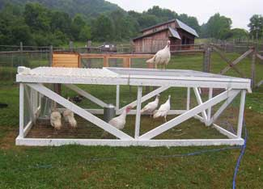

On Feb. 25, 2008, approximately 70 people gathered at Ayrshire Farm in Upperville, Va., to participate in a blind tasting comparing one industrial and eight heritage varieties of turkey. The food professionals, chefs, food writers and food connoisseurs in attendance all had one thing in common - an interest in great food.
The purpose of the event was to give a fair and parallel comparison of nine varieties of turkey to determine which, if any, stood out in flavor. This unique event was conducted blind, with each turkey variety cut into bite-sized pieces in covered dishes at numbered stations. Numbered toothpicks and scorecards were provided to aid in evaluating the turkeys. Additionally, whole, roasted turkeys were placed on a table, with their corresponding number, so that appearance could be appraised as well.
The turkeys were scored based on flavor, texture, tenderness, aroma and appearance.
After tasting the turkeys, the enthusiastic crowd was asked to vote for their favorite number before the varieties were revealed. Each of the nine turkeys had supporters, but when the tally was counted all eight of the heritage turkey varieties came out ahead of the industrial variety - a Butterball.
The clear winner in this historical tasting was the midget white turkey, with second place going to the bourbon red. These top two favorites each received nearly twice as many votes as any of the other turkey varieties.
The other six heritage turkey varieties tasted were the royal palm, chocolate, slate, Narragansett, bronze and black. Heritage turkeys are noted for slow to moderate rate of growth and most are considered rare by the American Livestock Breeds Conservancy.
All but two of the varieties - the standard bronze and the Butterball - had been grown on Ayrshire Farm, fed organic feed and raised and processed humanely, following the standards of Humane Farm Animal Care.
This event was the largest comparison of turkey varieties to date and was an opportunity for several of the turkey varieties to be “boarded” onto the Slow Food USA Ark of Taste - a designation recognizing unique culinary flavors and traditions. Invitees enjoyed being present at an Ark boarding, and heartily endorsed the worthiness of the slate, royal palm and midget white turkey varieties.
The event was produced through a partnership of the American Livestock Breeds Conservancy, Humane Farm Animal Care, Slow Food USA and Ayrshire Farm.
For more information on the turkey varieties, placings, hosting organizations or turkey facts, click here.
|
 HILARY CHESTER/ALWAYS SOMETHIN' FARM At first glance, these turkeys may look like broad-breasted white turkeys, but they’re smaller - even when mature. And a recent test proves their flavor is better. |
|
|